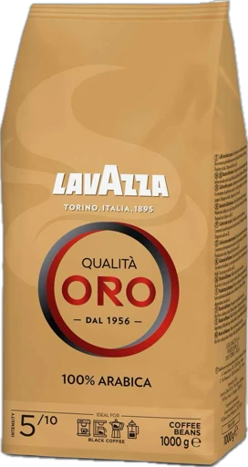
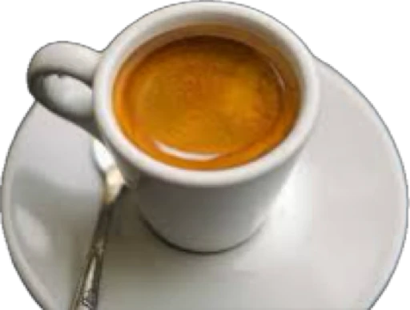
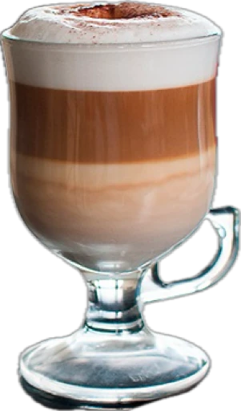

Что такое кофе?
Кофе — это напиток, получаемый из обжаренных и перемолотых семян кофейного дерева (кофейных зёрен). Кофе является одним из самых популярных напитков в мире и обладает стимулирующим эффектом благодаря содержанию кофеина.
Виды кофейных деревьев
Арабика (Coffea arabica)
Считается более качественным и ароматным.
Имеет мягкий вкус с нотками сладости и кислоты.
Содержит меньше кофеина по сравнению с робустой.
Около 60-70% мирового производства кофе.
Робуста (Coffea canephora)
Более крепкий, горький вкус.
Содержит больше кофеина.
Более устойчив к вредителям и погодным условиям.
Преимущественно используется для эспрессо и растворимого кофе.
Основные способы приготовления кофе
Эспрессо — концентрированный кофе, приготовленный под давлением.
Польза кофе
Повышает бодрость и концентрацию.
Содержит антиоксиданты.
Может снизить риск некоторых заболеваний (например, Паркинсона, диабета 2 типа, некоторых видов рака).
Вред кофе (при чрезмерном употреблении)
Может вызывать бессонницу и тревожность.
Повышает кровяное давление.
Может раздражать желудок.
Интересные факты
Кофе — второй по популярности товар в мире после нефти.
Эфиопия считается родиной кофе.
Кофе впервые начали пить в арабских странах в XV веке.

Эспрессо — это основа основ в кофейной культуре.
Что такое Эспрессо:
Эспрессо — это концентрированный кофейный напиток, приготовленный путём пропускания горячей воды (около 90-96°C) под высоким давлением (около 9 бар) через плотно утрамбованную порцию молотого кофе (обычно 7-9 г на одну порцию).
Особенности:
Объём: 25-35 мл
Крепость: высокая
Вкус: насыщенный, плотный, с характерной пенкой (крема)
Текстура: густая, с балансом кислинки, горечи и сладости
Почему Эспрессо особенный:
Основа большинства кофейных напитков: латте, капучино, американо, раф и др.
Крема (золотистая пенка) — показатель качественного эспрессо.
Быстрое приготовление — около 25-30 секунд.
Правильная экстракция позволяет получить сложный вкус.

Что такое Американо:
Американо (Caffè Americano) — это кофейный напиток, полученный путём разбавления порции эспрессо горячей водой.
В отличие от фильтр-кофе, американо сохраняет вкус и аромат эспрессо, но становится менее крепким и более мягким.
Особенности:
Объём: 120-180 мл
Вкус: менее крепкий, чем эспрессо, но с теми же нотками, лёгкий и сбалансированный
Текстура: лёгкая, водянистая, без насыщенности эспрессо
Содержание кофеина: зависит от порции эспрессо (обычно 1 или 2 шота)
Капучино — это кофейный напиток на основе эспрессо с добавлением вспененного молока и молочной пены, в соотношении примерно 1:1:1.
Он отличается нежной текстурой, бархатистым вкусом и характерной молочной пенкой.Особенности:
Вкус мягкий и сливочный, с кофейной основой.
Легкая кислинка и приятная горчинка сбалансированы сладостью молока.
Молочная пена традиционно густая и устойчивая.
В идеале сверху украшается небольшим слоем корицы, какао или без украшений.

Латте (Caffè Latte) — это кофейный напиток на основе одного шота эспрессо, большого количества горячего молока и тонкого слоя молочной пены.
В отличие от капучино, латте имеет более мягкий вкус и текстуру за счёт большего количества молока.Очень мягкий и сливочный вкус, минимальная горечь.
Лёгкая кофейная нотка с доминирующим вкусом молока.
Подаётся в высоком стакане или бокале.
Часто украшается латте-артом (рисунки на пенке).

Флэт Уайт — это кофейный напиток, происходящий из Австралии или Новой Зеландии (дебаты идут до сих пор), который сочетает двойной эспрессо и микропенку молока.
Флэт Уайт отличается насыщенным кофейным вкусом и тонкой шелковистой молочной текстурой.Особенности:
Более крепкий и кофейный вкус, чем у латте и капучино.
Молоко подаётся в виде микропены (тонкая, бархатистая, почти без толстого слоя пены).
Подаётся в чашке объёмом 150-180 мл.
Идеальный баланс крепости кофе и молочной мягкости.

Раф (Raf Coffee) — это кофейный напиток, созданный в Москве в конце 1990-х годов.
Отличается сливочной текстурой, мягким сладким вкусом и ароматом ванили. В отличие от латте и капучино, сливки взбиваются сразу с кофе и сиропом, образуя однородную воздушную массу.Вкус мягкий, сливочный, сладковатый.
Нет привычного слоя молочной пены — напиток весь превращается в лёгкую кремовую текстуру.
Подаётся в больших чашках или бокалах (200-250 мл).
Идеален как десертный кофе.